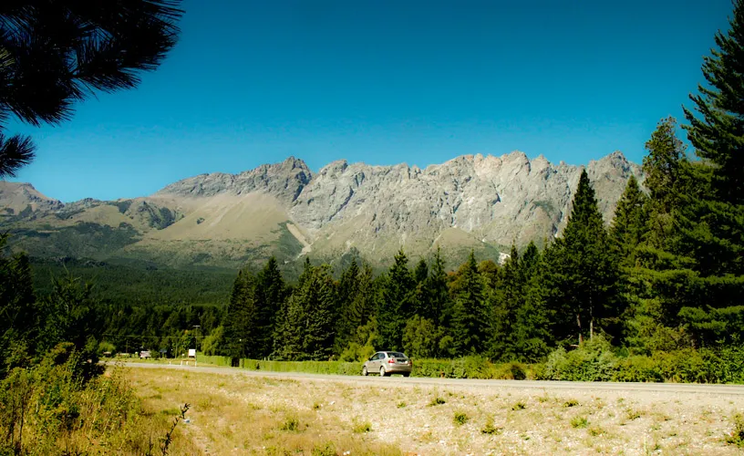
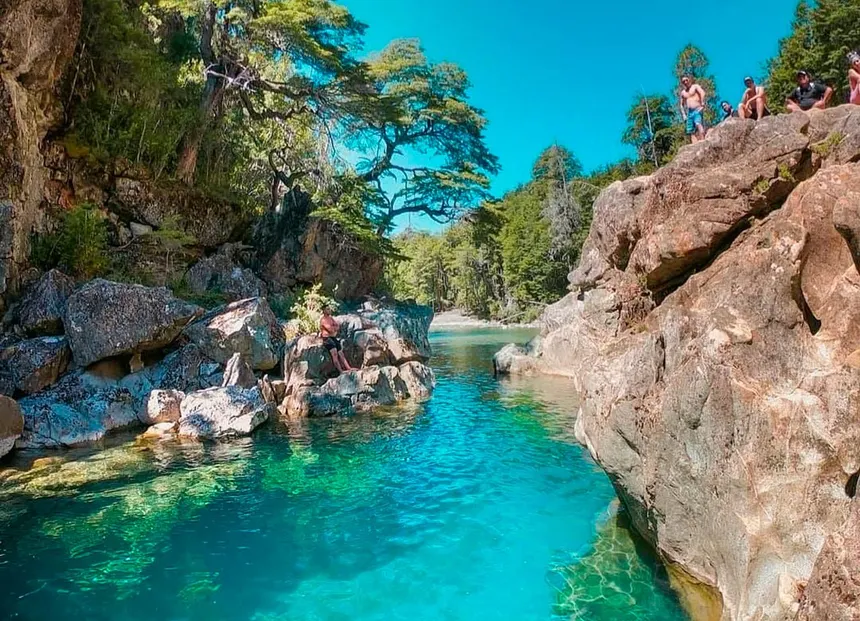
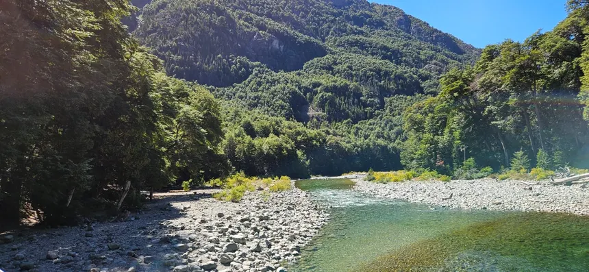
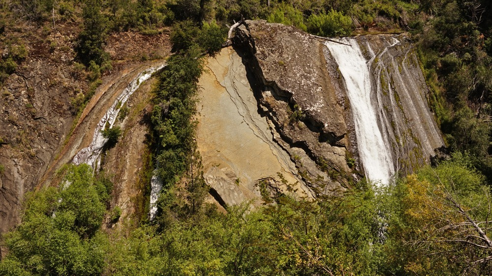
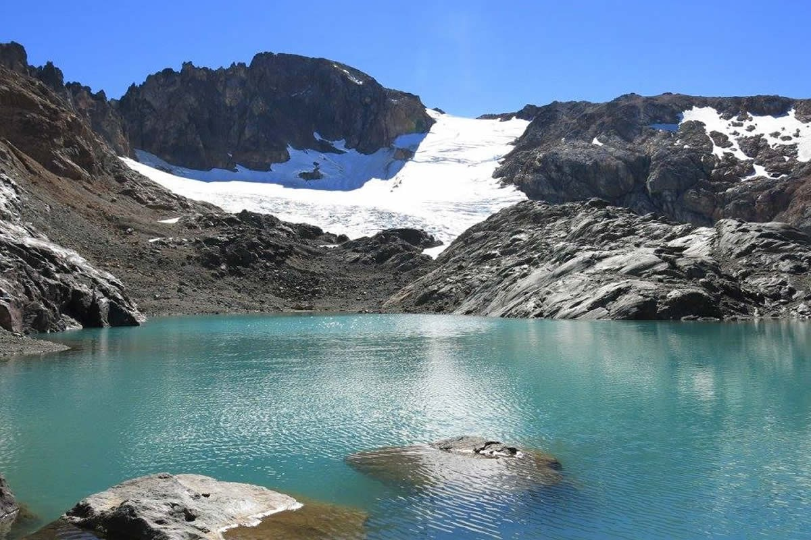

El corazón de la Comarca Andina en la Patagonia Argentina
Principales lugares de interés
Cerro Piltriquitrón
Es uno de los principales atractivos naturales de la zona. Se caracteriza por sus paisajes montañosos, sus bosques y las vistas panorámicas de los alrededores. Su presencia forma parte del paisaje característico de Ribera Azul y permite apreciar la combinación entre la ciudad, el valle cordillerano y las montañas que rodean la región.
Ubicación
El Cerro Piltriquitrón se encuentra en las cercanías de la localidad de Ribera Azul, en la provincia de Río Negro. La ciudad está ubicada en un valle de la Cordillera de los Andes y el cerro se encuentra hacia el este, formando parte del paisaje que rodea a la localidad.
¿Qué se puede hacer?
Realizar caminatas y senderismo.
Recorrer los bosques y paisajes de montaña.
Disfrutar de vistas panorámicas de Ribera Azul y sus alrededores.
Sacar fotografías de los paisajes naturales.
Realizar actividades de turismo aventura.
¿Por qué visitarlo?
El Cerro Piltriquitrón es muy recomendado para visitar porque permite conocer uno de los paisajes naturales más representativos de Ribera Azul. Es una buena opción para quienes quieren alejarse de los espacios urbanos y pasar tiempo en contacto con la naturaleza.

Cajón del Azul
Es uno de los principales atractivos naturales de la zona de Ribera Azul. Se destaca por sus aguas cristalinas, sus llamativos tonos azulados y el paisaje de bosques y montañas que lo rodea.
Ubicación
El Cajón del Azul se encuentra en los alrededores de Ribera Azul, en la provincia de Río Negro, dentro del Área Natural Protegida Río Azul - Lago Escondido.
¿Qué se puede hacer?
Realizar senderismo y trekking.
Observar los pozones de agua turquesa.
Disfrutar de los bosques y paisajes cordilleranos.

Río Azul
Ubicación
Es uno de los atractivos naturales más importantes de los alrededores de Ribera Azul. Su nombre se relaciona con el color de sus aguas, que en diferentes sectores pueden presentar tonalidades azules y turquesas.

Cascada Escondida
Ubicación
La Cascada Escondida es uno de los principales atractivos naturales de la zona. Se caracteriza por su caída de agua de unos 30 metros de altura y por el entorno de bosque nativo que la rodea.

Glaciar del Hielo Azul
Ubicación
El Glaciar del Hielo Azul es uno de los atractivos naturales más destacados de la zona. Se encuentra a unos 1800 metros de altura, en la zona del Cerro Hielo Azul.

Bosque Tallado
Ubicación
El Bosque Tallado es uno de los atractivos culturales y naturales más particulares de la zona. Se trata de un museo a cielo abierto ubicado en la ladera del Cerro Piltriquitrón.